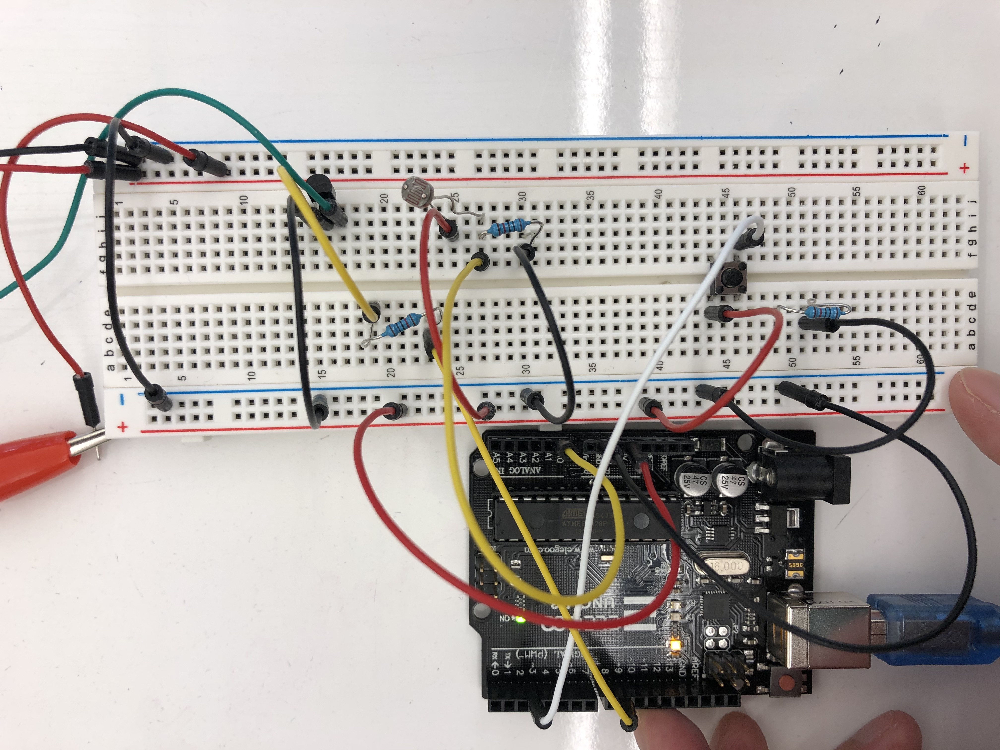
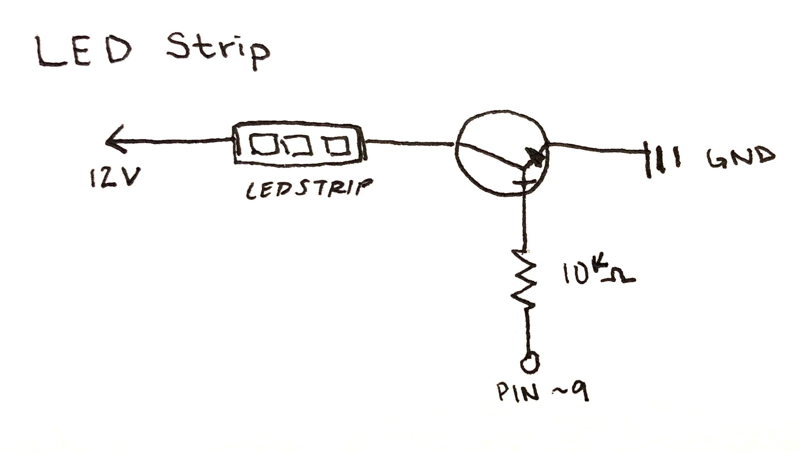

Top view with LED strip in the picture

Top view close-up of the breadboard focusing on the specifics on where the wires are.
Alternative angle
Pictures of my circuit. I split the breadboard into 3 sections to make 3 seperate
parts. Two sensors (button & LDR) and one output(LED Strip). Each part of this one
big circuit project utilizes past assignments to put all the pieces together correctly.
Credit to the weekly slides, HCDE Github examples, and Nadya/Jasper for helping me debug my code

Picture of my schematic & calculations.
I chose to use a 10k ohm resistor for my button, photoresistor, and LED strip because it will properly
ensure the components are grounded. It is a safe choice for this circuit. Other than that, there were no
other real calculations. The values were translated from the keyboard to the LED strip by determining their
ASCII value.